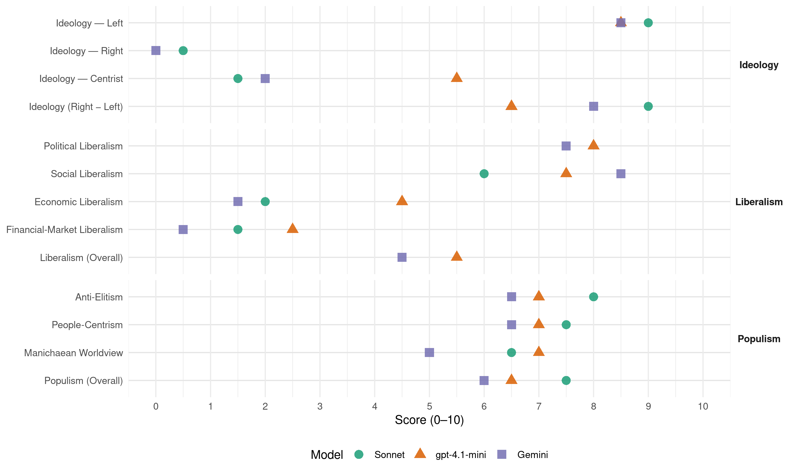

SKDL (Finland, 1987)
manifesto_id 14221_198703
Get full text: This site shows derived annotations and short verbatim quotes only. The full manifesto text is © Manifesto Project / WZB — obtain it via manifesto-project.wzb.eu using the manifesto_id above.
Headline scores
| Dimension | Sonnet | gpt-4.1-mini | Gemini |
|---|---|---|---|
| Populism (Overall) | 7.5 | 6.5 | 6.0 |
| Anti-Elitism | 8.0 | 7.0 | 6.5 |
| People-Centrism | 7.5 | 7.0 | 6.5 |
| Manichaean Worldview | 6.5 | 7.0 | 5.0 |
| Ideology (Right − Left) | 9.0 | 6.5 | 8.0 |
| Liberalism (Overall) | – | 5.5 | 4.5 |
| Political Liberalism | – | 8.0 | 7.5 |
| Social Liberalism | 6.0 | 7.5 | 8.5 |
| Economic Liberalism | 2.0 | 4.5 | 1.5 |
| Financial-Market Liberalism | 1.5 | 2.5 | 0.5 |
Evidence per dimension
Economic Liberalism
Gemini · score 2.0 · verified · chunk 1
“förhindra att jordbruksjord blir föremål för spekulation”
odlarbefolkningen. Man bör förhindra att jordbruksjord blir föremål för spekulation och glider ur händerna på odlarbefolkningen.
Gemini · score 1.0 · verified · chunk 2
“makten, som är baserad på det privata ägandet”
vårt lands utveckling förutsätter att makten, som är baserad på det privata ägandet av produktionsmedel, skärs ner.
gpt-4.1-mini · score 6.0 · verified · chunk 1
“statliga företagen på ett klarare sätt än hittills utvidgar sin produktion”
Stärkandet av produktionsverksamhetens tekniska bas och tryggandet av dess förnyelseförmåga förutsätter, ett de statliga företagen på ett klarare sätt än hittills utvidgar sin produktion också utanför den kapitalintensiva basindustrin, särskilt till områden som kräver stora forsknings- och utvecklingsinsatser.
gpt-4.1-mini · score 3.0 · verified · chunk 2
“överförande till statsmaktens effektiva ledning och övervakning”
De ur folkhushållningens synpunkt centrala produktionsbranschernas, de privata affärsbankernas och övriga penninganstalters, försäkringsbolagens och utrikeshandelns överförande till statsmaktens effektiva ledning och övervakning samt i sista hand de stora monopolföretagens och affärsbankernas rationalisering skapar förutsättningar för ekonomins och hela samhällets planenliga utveckling.
Sonnet · score 2.0 · verified · chunk 1
“privata äganderätten till produktionsmedlen”
krisföreteelser har sina rötter i den privata äganderätten till produktionsmedlen och samhällssystemet, som överlevt sig själv
Sonnet · score 2.0 · verified · chunk 2
“affärsbankernas rationalisering skapar förutsättningar”
de privata affärsbankernas och övriga penninganstalters, försäkringsbolagens och utrikeshandelns överförande till statsmaktens effektiva ledning och övervakning samt i sista hand de stora monopolföretagens och affärsbankernas rationalisering
Financial-Market Liberalism
Gemini · score 1.0 · verified · chunk 1
“finländska företagens och penninginrättningarnas verksamhet i utlandet”
och västliga handels- och ekonomiska grupperingarna. De finländska företagens och penninginrättningarnas verksamhet i utlandet bör övervakas så att inte beroendet
Gemini · score 0.0 · verified · chunk 2
“privata affärsbankernas och övriga penninganstalters”
centrala produktionsbranschernas, de privata affärsbankernas och övriga penninganstalters, försäkringsbolagens och utrikeshandelns överförande
gpt-4.1-mini · score 3.0 · verified · chunk 1
“finländska företagens och penninginrättningarnas verksamhet i utlandet bör övervakas”
Den bör utgå från medborgarnas verkliga behov och våra naturliga produktionsförutsättningar, framför allt det arbete medborgarna utför med hand och hjärna, vår befolknings höga bildningsnivå och yrkesskicklighet, ett livligt vetenskapligt arbete och forskning, utvecklingen av en teknoligiskt sett relativt högtstående produktionsstruktur samt den förnuftiga användningen av våra naturrikedomar. Tryggandet av den ekonomiska självständigheten och av en gynnsam ekonomisk utveckling förutsätter att man lösgör sig från de menliga ekonomiska bindningarna vid de kapitalistiska världsmarknaderna och de västliga handels- och ekonomiska grupperingarna. De finländska företagens och penninginrättningarnas verksamhet i utlandet bör övervakas så att inte beroendet av multinationella storföretag och västliga penninginrättningar ökar.
gpt-4.1-mini · score 2.0 · verified · chunk 2
“privata affärsbankernas och övriga penninganstalters, försäkringsbolagens”
De ur folkhushållningens synpunkt centrala produktionsbranschernas, de privata affärsbankernas och övriga penninganstalters, försäkringsbolagens och utrikeshandelns överförande till statsmaktens effektiva ledning och övervakning samt i sista hand de stora monopolföretagens och affärsbankernas rationalisering skapar förutsättningar för ekonomins och hela samhällets planenliga utveckling.
Sonnet · score 2.0 · verified · chunk 1
“Penninganstalterna bör ges bindande finansieringsskyldigheter”
Penninganstalterna bör ges bindande finansieringsskyldigheter för tryggandet av tillräcklig bostadsbelåning
Sonnet · score 1.0 · verified · chunk 2
“affärsbankernas och övriga penninganstalters”
de privata affärsbankernas och övriga penninganstalters, försäkringsbolagens och utrikeshandelns överförande till statsmaktens effektiva ledning och övervakning
Political Liberalism
Gemini · score 8.0 · verified · chunk 1
“Medborgarnas demokratiska rättigheter måste tryggas”
medborgarkriget. Medborgarnas demokratiska rättigheter måste tryggas i vårt land. Detta ledde till att
Gemini · score 7.0 · verified · chunk 2
“De demokratiska rättigheterna och friheterna”
zigenarkulturen och -språket måste tryggas… Demokratin De demokratiska rättigheterna och friheterna i det finländska samhället
gpt-4.1-mini · score 8.0 · verified · chunk 1
“demokratiska rättigheterna och friheterna i det finländska samhället”
De demokratiska rättigheterna och friheterna i det finländska samhället såsom medborgarnas åsikts- och föreningsrätt, rätt till politisk verksamhet, organisering och partibildande samt folkrepresentationen, baserad på allmän och lika rösträtt är betydande vinningar, som måste försvaras och utvecklas.
gpt-4.1-mini · score 8.0 · verified · chunk 2
“Demokratin De demokratiska rättigheterna och friheterna i det finländska samhället”
Demokratin De demokratiska rättigheterna och friheterna i det finländska samhället såsom medborgarnas åsikts- och föreningsrätt, rätt till politisk verksamhet, organisering och partibildande samt folkrepresentationen, baserad på allmän och lika rösträtt är betydande vinningar, som måste försvaras och utvecklas.
Sonnet · score 5.0 · mixed · chunk 1
“demokratiska rättigheterna och friheterna”
De demokratiska rättigheterna och friheterna i det finländska samhället såsom medborgarnas åsikts- och föreningsrätt, rätt till politisk verksamhet, organisering och partibildande
Sonnet · score 5.0 · mixed · chunk 2
“demokratiska rättigheterna och friheterna i det finländska”
De demokratiska rättigheterna och friheterna i det finländska samhället såsom medborgarnas åsikts- och föreningsrätt, rätt till politisk verksamhet
Liberalism (Overall)
Gemini · score 5.0 · verified · chunk 1
“Medborgarnas demokratiska rättigheter måste tryggas”
medborgarkriget. Medborgarnas demokratiska rättigheter måste tryggas i vårt land. Detta ledde till att
Gemini · score 4.0 · verified · chunk 2
“De demokratiska rättigheterna och friheterna”
zigenarkulturen och -språket måste tryggas… Demokratin De demokratiska rättigheterna och friheterna i det finländska samhället
gpt-4.1-mini · score 6.0 · verified · chunk 1
“De demokratiska rättigheterna och friheterna i det finländska samhället”
De demokratiska rättigheterna och friheterna i det finländska samhället såsom medborgarnas åsikts- och föreningsrätt, rätt till politisk verksamhet, organisering och partibildande samt folkrepresentationen, baserad på allmän och lika rösträtt är betydande vinningar, som måste försvaras och utvecklas.
gpt-4.1-mini · score 5.0 · verified · chunk 2
“Demokratin De demokratiska rättigheterna och friheterna i det finländska samhället”
Demokratin De demokratiska rättigheterna och friheterna i det finländska samhället såsom medborgarnas åsikts- och föreningsrätt, rätt till politisk verksamhet, organisering och partibildande samt folkrepresentationen, baserad på allmän och lika rösträtt är betydande vinningar, som måste försvaras och utvecklas.
Sonnet · score 4.0 · mixed · chunk 1
“demokratiska rättigheterna och friheterna”
De demokratiska rättigheterna och friheterna i det finländska samhället såsom medborgarnas åsikts- och föreningsrätt, rätt till politisk verksamhet
Sonnet · score 4.0 · mixed · chunk 2
“demokratiska rättigheterna och friheterna”
De demokratiska rättigheterna och friheterna i det finländska samhället såsom medborgarnas åsikts- och föreningsrätt, rätt till politisk verksamhet
Anti-Elitism
Gemini · score 6.0 · verified · chunk 1
“partiers reaktionära politik, som representerar storkapitalet”
desto effektivare kan de partiers reaktionära politik, som representerar storkapitalet, kapitalismens krisföreteelser och deras
Gemini · score 7.0 · verified · chunk 2
“tåväldets förstärkning. Att försvara vårt”
inskränkningen av demokratin, byråkratisering och å andra sidan tåväldets förstärkning. Att försvara vårt samhälles demokratiska principer
gpt-4.1-mini · score 7.0 · verified · chunk 1
“Kapitalismens samhälleliga maktstrukturer, som överlevt sig själv”
Kapitalismens samhälleliga maktstrukturer, som överlevt sig själv, och deras inflytande på den internationella utvecklingen klavbinder utnyttjandet av de av vetenskap och teknologi skapade nya möjligheterna för lösandet av mänsklighetens problem och upprätthåller det imperialistiska system som underkuvar folk.
gpt-4.1-mini · score 7.0 · verified · chunk 2
“inskränkningen av demokratin, byråkratisering”
Kapitalismens utveckling för närvarande kännetecknas av det ökade trycket för inskränkningen av demokratin, byråkratisering och å andra sidan tåväldets förstärkning. Att försvara vårt samhälles demokratiska principer och att verka för en utvidgning av demokratin är därför synnerligen aktuellt.
Sonnet · score 8.0 · verified · chunk 1
“nedskärningen av storkapitalets makt”
försvaret av de arbetandes ekonomiska, sociala och demokratiska rättigheter, samhälleliga framsteg samt avvärjandet av högerns och reaktionens strävanden och nedskärningen av storkapitalets makt
Sonnet · score 8.0 · verified · chunk 2
“monopolkapitalet, för inriktningen av nationens”
inskränkningen av de privilegier och den ekonomiska och politiska makt som är baserad på ägandet av produktionsmedlen och monopolkapitalet, för inriktningen av nationens utveckling på en ny väg
Ideology — Centrist
Gemini · score 2.0 · verified · chunk 1
“kämpa för de mindre bemedlade och undertryckta”
samhälleliga systemet vill kämpa för de mindre bemedlade och undertryckta. Alla de som är med i DFFF
gpt-4.1-mini · score 5.0 · verified · chunk 1
“människornas egna verksamhet, oförhindrat ger uttryck för deras vilja”
Den avgörande förutsättningen för demokratins förnyelse är den politiska och samhälleliga verksamhetens frihet och skapandet av likvärdiga förutsättningar för den. Medborgarnas och deras organisationers demokratiska verksamhetsrättigheter måste utvidgas och de direkta inflytelse- och övervakningsmöjligheterna beträffande den offentliga makten utvidgas. De demokratiskt valda statliga och kommunala organens ställning och beslutanderätt bör förstärkas. Förberedandet av besluten, beslutsfattandet och beslutens verkställande måste komma närmare varandra. Offentligheten borde ökas i alla skeden av beslutsfattandet. Administrationen måste lättas upp, de byråkratiska metoderna avskaffas och en öppen och demokratisk förvaltningspraxis skapas. De ur folkhushållningens synpunkt centrala produktionsbranschernas, de privata affärs
gpt-4.1-mini · score 6.0 · verified · chunk 2
“makten, som är baserad på det privata ägandet av produktionsmedel, skärs ner”
En gynnsam vändning i vårt lands utveckling förutsätter att makten, som är baserad på det privata ägandet av produktionsmedel, skärs ner. Grundlagen bör ändras så att riksdagen blir det centrala statsorganet.
Sonnet · score 2.0 · verified · chunk 1
“folkets vilja att höras”
Kommer de enskilda människornas åsikt och folkets vilja att höras när det beslutas om vår framtid?
Sonnet · score 1.0 · verified · chunk 2
“demokrati av nytt slag, verklig folkmakt”
Detta förutsätter och skapar samtidigt demokrati av nytt slag, verklig folkmakt, som grundar sig på människornas egna verksamhet
Ideology — Left
Gemini · score 8.0 · verified · chunk 1
“nedskärningen av det multinationella monopolkapitalets välde”
imperialistiska och neokolonialistiska underkastelseförsöken, nedskärningen av det multinationella monopolkapitalets välde, nationernas gemensamma ansvar
Gemini · score 9.0 · verified · chunk 2
“ersättandet av kapitalismen med socialismen”
förtryck och förödmjukande kräver ett ersättandet av kapitalismen med socialismen. Det på den privata
gpt-4.1-mini · score 8.0 · verified · chunk 1
“för inriktningen av nationens utveckling på en ny väg”
Djupgående reformer och kultur av nytt slag Det kapitalistiska Finland befinner sig i en bestående kris, som skärper de samhälleliga problemen. DFFF kämpar tillsammans med de arbetande varje dag för avvärjandet av krisens negativa följder och för förverkligandet av positiva lösningar. I denna kamp har det blivit allt tydligare, att bestående resultat och verkliga lösningar kan nås endast med radikala, djupgående politiska och samhälleliga förändringar. En ny riktning måste väljas. Det behövs reformer, som på djupet riktar sig in på det borgerliga samhällets och det kapitalistiska ekonomiska systemets grundvalar. Det centrala målet är den avgörande inskränkningen av de privilegier och den ekonomiska och politiska makt som är baserad på ägandet av produktionsmedlen och monopolkapitalet, för inriktningen av nationens utveckling på en ny väg.
gpt-4.1-mini · score 9.0 · verified · chunk 2
“ersättandet av kapitalismen med socialismen”
Människornas frigörelse från utsugning, förtryck och förödmjukande kräver ett ersättandet av kapitalismen med socialismen. Det på den privata äganderätten till produktionsmedlen baserade kapitalistiska produktionssättets djupa motsättning kommer till uttryck i att den på grund av de föråldrade samhälleliga strukturerna och produktionsmedlens äganderättsförhållanden inte är i stånd att använda sig av den vetenskapligt-tekniska utvecklingens möjligheter att förbättra människornas livsförhållanden.
Sonnet · score 9.0 · verified · chunk 1
“det privata vinststrävandet”
De kapitalistiska samhällenas krisföreteelser har sina rötter i den privata äganderätten till produktionsmedlen och samhällssystemet, som överlevt sig själv och är baserat på det privata vinststrävandet
Sonnet · score 9.0 · verified · chunk 2
“ersättandet av kapitalismen med socialismen”
Människornas frigörelse från utsugning, förtryck och förödmjukande kräver ett ersättandet av kapitalismen med socialismen.
Ideology (Right − Left)
Gemini · score 8.0 · verified · chunk 1
“nedskärningen av det multinationella monopolkapitalets välde”
imperialistiska och neokolonialistiska underkastelseförsöken, nedskärningen av det multinationella monopolkapitalets välde, nationernas gemensamma ansvar
Gemini · score 8.0 · verified · chunk 2
“ersättandet av kapitalismen med socialismen”
förtryck och förödmjukande kräver ett ersättandet av kapitalismen med socialismen. Det på den privata
gpt-4.1-mini · score 6.0 · verified · chunk 1
“Djupgående reformer och kultur av nytt slag Det kapitalistiska Finland befinner sig i en bestående kris”
Djupgående reformer och kultur av nytt slag Det kapitalistiska Finland befinner sig i en bestående kris, som skärper de samhälleliga problemen. DFFF kämpar tillsammans med de arbetande varje dag för avvärjandet av krisens negativa följder och för förverkligandet av positiva lösningar. I denna kamp har det blivit allt tydligare, att bestående resultat och verkliga lösningar kan nås endast med radikala, djupgående politiska och samhälleliga förändringar.
gpt-4.1-mini · score 7.0 · verified · chunk 2
“ersättandet av kapitalismen med socialismen”
Människornas frigörelse från utsugning, förtryck och förödmjukande kräver ett ersättandet av kapitalismen med socialismen. Det på den privata äganderätten till produktionsmedlen baserade kapitalistiska produktionssättets djupa motsättning kommer till uttryck i att den på grund av de föråldrade samhälleliga strukturerna och produktionsmedlens äganderättsförhållanden inte är i stånd att använda sig av den vetenskapligt-tekniska utvecklingens möjligheter att förbättra människornas livsförhållanden.
Sonnet · score 9.0 · verified · chunk 1
“socialistisk samhällsomdaning positivt inställda”
till en socialistisk samhällsomdaning positivt inställda människornas förbund
Sonnet · score 9.0 · verified · chunk 2
“socialistiskt produktionssätt, som bygger på det samhälleliga”
Vi behöver ett nytt, socialistiskt produktionssätt, som bygger på det samhälleliga ägandet av de centrala produktionsmedlen
Ideology — Right
Gemini · score 0.0 · verified · chunk 1
“istället för den chauvinistiska inställningen”
demokrati och internationalism, måste skapas i landet i stället för den chauvinistiska inställningen. Återuppbyggandet av det
Sonnet · score 1.0 · verified · chunk 1
“multinationella massunderhållningen, som utarmar kulturen”
Vårt land måste ovillkorligen skydda sig för den multinationella massunderhållningen, som utarmar kulturen
Sonnet · score 0.0 · verified · chunk 2
“respekten för de mänskliga rättigheterna”
iakttagandet av principerna om fred, vänskap mellan folken och respekten för de mänskliga rättigheterna skapar perspektiv för hela vår nationella existens
Manichaean Worldview
Gemini · score 5.0 · verified · chunk 1
“befriandet av människan från utsugning, förtryck”
andliga tillväxt samt befriandet av människan från utsugning, förtryck och förnedring är utmaningar som vi
Gemini · score 5.0 · verified · chunk 2
“frigörelse från utsugning, förtryck och”
samhällssystemet. Människornas frigörelse från utsugning, förtryck och förödmjukande kräver ett ersättandet
gpt-4.1-mini · score 5.0 · mixed · chunk 1
“kapitalistiska ekonomiska systemets grundvalar”
Djupgående reformer och kultur av nytt slag Det kapitalistiska Finland befinner sig i en bestående kris, som skärper de samhälleliga problemen. DFFF kämpar tillsammans med de arbetande varje dag för avvärjandet av krisens negativa följder och för förverkligandet av positiva lösningar. I denna kamp har det blivit allt tydligare, att bestående resultat och verkliga lösningar kan nås endast med radikala, djupgående politiska och samhälleliga förändringar. En ny riktning måste väljas. Det behövs reformer, som på djupet riktar sig in på det borgerliga samhällets och det kapitalistiska ekonomiska systemets grundvalar.
gpt-4.1-mini · score 7.0 · verified · chunk 2
“kapitalistiska produktionssättets djupa motsättning”
Det på den privata äganderätten till produktionsmedlen baserade kapitalistiska produktionssättets djupa motsättning kommer till uttryck i att den på grund av de föråldrade samhälleliga strukturerna och produktionsmedlens äganderättsförhållanden inte är i stånd att använda sig av den vetenskapligt-tekniska utvecklingens möjligheter att förbättra människornas livsförhållanden.
Sonnet · score 6.0 · verified · chunk 1
“de partiers reaktionära politik, som representerar storkapitalet”
kan de partiers reaktionära politik, som representerar storkapitalet, kapitalismens krisföreteelser och deras samhälleliga skador, avvärjas
Sonnet · score 7.0 · verified · chunk 2
“Kapitalismen klavbinder människans mänskliga växt”
Kapitalismen klavbinder människans mänskliga växt och innebär att utsugningen av människan och av naturen samt den samhälleliga olikvärdigheten fortsätter.
People-Centrism
Gemini · score 7.0 · verified · chunk 1
“enskilda människornas åsikt och folkets vilja”
Kommer de enskilda människornas åsikt och folkets vilja att höras när det beslutas om
Gemini · score 6.0 · verified · chunk 2
“verklig folkmakt, som grundar sig”
skapar samtidigt demokrati av nytt slag, verklig folkmakt, som grundar sig på människornas egna verksamhet
gpt-4.1-mini · score 6.0 · verified · chunk 1
“människornas egna verksamhet, oförhindrat ger uttryck för deras vilja”
Den avgörande förutsättningen för demokratins förnyelse är den politiska och samhälleliga verksamhetens frihet och skapandet av likvärdiga förutsättningar för den. Medborgarnas och deras organisationers demokratiska verksamhetsrättigheter måste utvidgas och de direkta inflytelse- och övervakningsmöjligheterna beträffande den offentliga makten utvidgas. De demokratiskt valda statliga och kommunala organens ställning och beslutanderätt bör förstärkas. Förberedandet av besluten, beslutsfattandet och beslutens verkställande måste komma närmare varandra. Offentligheten borde ökas i alla skeden av beslutsfattandet. Administrationen måste lättas upp, de byråkratiska metoderna avskaffas och en öppen och demokratisk förvaltningspraxis skapas. De ur folkhushållningens synpunkt centrala produktionsbranschernas, de privata affärs
gpt-4.1-mini · score 8.0 · verified · chunk 2
“verklig folkmakt, som grundar sig på människornas egna verksamhet”
Det centrala målet är den avgörande inskränkningen av de privilegier och den ekonomiska och politiska makt som är baserad på ägandet av produktionsmedlen och monopolkapitalet, för inriktningen av nationens utveckling på en ny väg. Detta förutsätter och skapar samtidigt demokrati av nytt slag, verklig folkmakt, som grundar sig på människornas egna verksamhet och oförhindrat ger uttryck för deras vilja.
Sonnet · score 7.0 · verified · chunk 1
“folkets vilja att höras”
Kommer de enskilda människornas åsikt och folkets vilja att höras när det beslutas om vår framtid?
Sonnet · score 8.0 · verified · chunk 2
“verklig folkmakt, som grundar sig på människornas”
Detta förutsätter och skapar samtidigt demokrati av nytt slag, verklig folkmakt, som grundar sig på människornas egna verksamhet och oförhindrat ger uttryck för deras vilja.
Populism (Overall)
Gemini · score 6.0 · verified · chunk 1
“enskilda människornas åsikt och folkets vilja”
Kommer de enskilda människornas åsikt och folkets vilja att höras när det beslutas om
Gemini · score 6.0 · verified · chunk 2
“verklig folkmakt, som grundar sig”
skapar samtidigt demokrati av nytt slag, verklig folkmakt, som grundar sig på människornas egna verksamhet
gpt-4.1-mini · score 6.0 · verified · chunk 1
“Kapitalismens samhälleliga maktstrukturer, som överlevt sig själv”
Kapitalismens samhälleliga maktstrukturer, som överlevt sig själv, och deras inflytande på den internationella utvecklingen klavbinder utnyttjandet av de av vetenskap och teknologi skapade nya möjligheterna för lösandet av mänsklighetens problem och upprätthåller det imperialistiska system som underkuvar folk.
gpt-4.1-mini · score 7.0 · verified · chunk 2
“verklig folkmakt, som grundar sig på människornas egna verksamhet”
Det centrala målet är den avgörande inskränkningen av de privilegier och den ekonomiska och politiska makt som är baserad på ägandet av produktionsmedlen och monopolkapitalet, för inriktningen av nationens utveckling på en ny väg. Detta förutsätter och skapar samtidigt demokrati av nytt slag, verklig folkmakt, som grundar sig på människornas egna verksamhet och oförhindrat ger uttryck för deras vilja.
Sonnet · score 7.0 · verified · chunk 1
“nedskärningen av storkapitalets makt”
försvaret av de arbetandes ekonomiska, sociala och demokratiska rättigheter, samhälleliga framsteg samt avvärjandet av högerns och reaktionens strävanden och nedskärningen av storkapitalets makt
Sonnet · score 8.0 · verified · chunk 2
“kämpar tillsammans med de arbetande varje dag”
DFFF kämpar tillsammans med de arbetande varje dag för avvärjandet av krisens negativa följder och för förverkligandet av positiva lösningar.
Social Liberalism